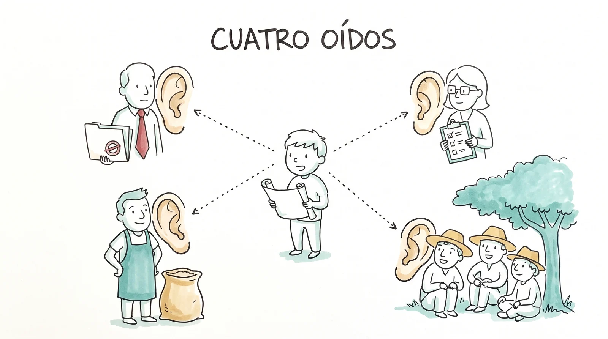
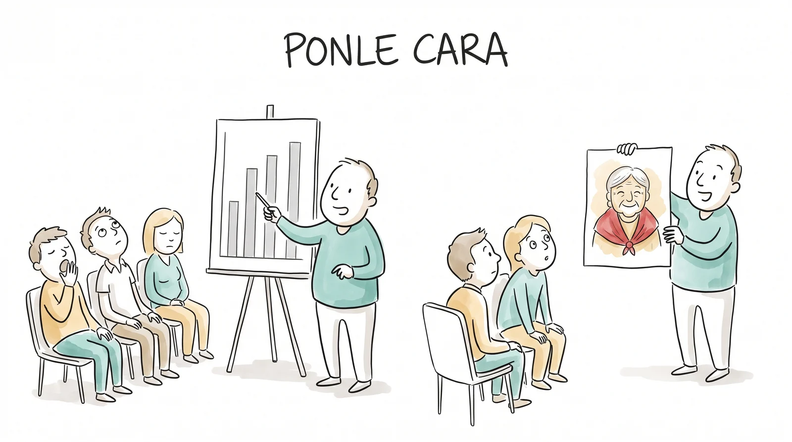
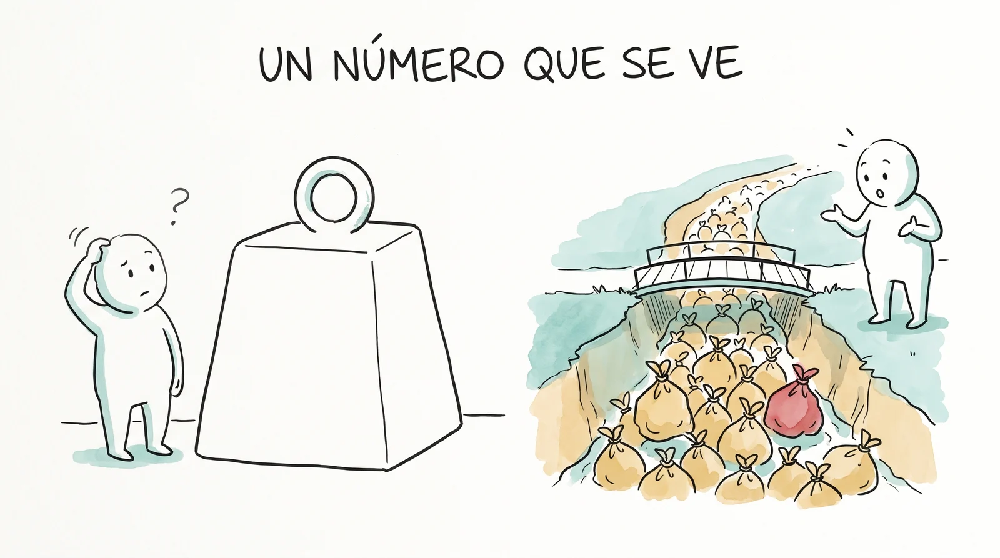
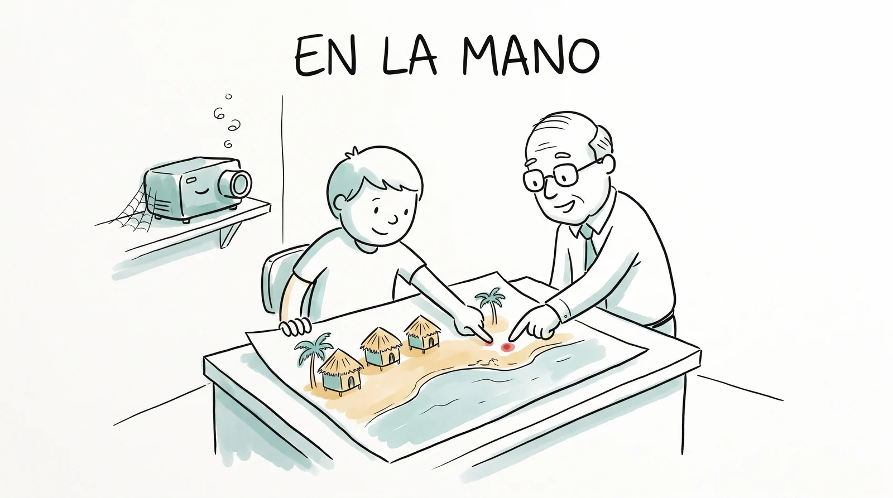
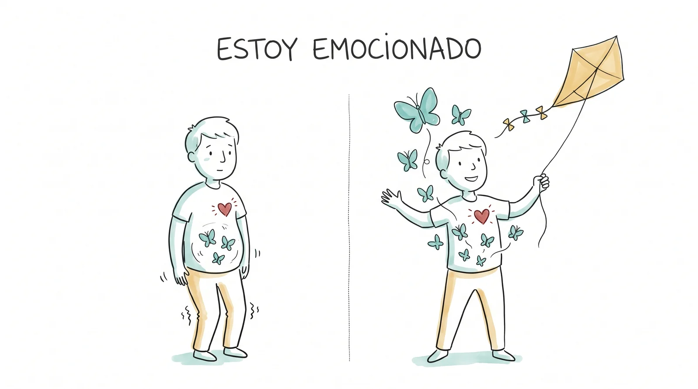

El mazo de la segunda parte: cómo se cuenta el proyecto en voz alta para que alguien dé el siguiente paso. Se proyecta con Presentar; la tecla N muestra las notas del conductor. Cada afirmación sobre lo que convence trae su estudio en la nota, con autor y año.
El pitch
Que cada equipo salga con dos minutos escritos, ensayados tres veces y con una petición distinta para cada oído.
Dos minutos
Contar el proyecto para que alguien dé el siguiente paso.

Están en la fila de las tortillas. Delante de ustedes hay alguien del Ayuntamiento que les pregunta: "¿y ustedes qué andan haciendo en la presa?". Tienen lo que tarda la fila. ¿Qué le dicen?
Casi todos empiezan por el principio: "pues mire, es que en la materia de gestión nos pidieron hacer una consulta y luego un árbol de problemas...". A los treinta segundos ya llegaron al mostrador y la persona todavía no sabe qué quieren hacer ni qué le están pidiendo. Lo que hace falta es lo contrario: empezar por lo que le pasa a la gente y terminar pidiendo una cosa.
Dos personas voluntarias lo intentan de pie, con reloj a la vista y sin corrección. Anotar en el pizarrón cuánto tardaron y con qué frase cerraron. Al final de la práctica se repite la escena con las mismas dos personas: la diferencia es la lección.

Dos minutos: lo que dura la arena, y una puerta que se empieza a abrir.
El pitch: cinco partes que caben en dos minutos y terminan en una puerta.
Qué es y para qué sirve
Un pitch es contar tu proyecto en dos minutos, de manera que quien escucha quiera dar un paso.
La palabra viene del béisbol: es el lanzamiento. No sirve para que te den el dinero ahí mismo, porque casi nadie decide en dos minutos. Sirve para conseguir lo que sigue: que te reciban el oficio, que te den una cita de media hora, que vayan a ver la orilla, que el tema entre al orden del día de la asamblea. Un pitch salió bien si al terminar hay una fecha.
Tres tamaños del mismo pitch
Hoy se escribe el de dos minutos, porque de él salen los otros dos: el de pasillo se obtiene quitando, y el de la asamblea, enseñando el plano y dejando hablar a la gente.
Las cinco partes
| Parte | Lo que se dice | De dónde sale | Segundos |
|---|---|---|---|
| 1 · Qué pasa y a quién | El problema, con una persona o una frase de la consulta y un número | La consulta y el árbol de problemas | 25 |
| 2 · Lo que vamos a hacer | Qué, dónde y cuándo, en cosas que se pueden dibujar | El plano y el cronograma | 25 |
| 3 · Lo que cambia | El cambio en la gente, con número, fecha y quién lo cuenta | El marco lógico | 20 |
| 4 · Lo que ya está puesto | Lo que pone la comunidad, en pesos, y lo que el equipo ya tiene hecho | El presupuesto, columna de especie | 20 |
| 5 · Lo que te pido | Una cosa, con cantidad y fecha, y el siguiente paso | El mapa de gestión | 30 |
Son los cuatro movimientos del pitch de la semana 10, con dos cambios: lo que pone la comunidad tiene su propia parte, porque es lo que más convence, y la petición se separa del costo, porque a cada quien se le pide algo distinto.

Ponle cara: la gráfica aburre, la señora del rebozo no.
1 Qué pasa y a quién
Empieza por el problema, no por tu solución. Y ponle cara.
"El 67 por ciento de los visitantes permanece menos de una hora" es verdad y nadie lo recuerda. "Una señora nos dijo: venimos, nos mojamos los pies y nos vamos, porque no hay ni dónde sentarse" se queda en la cabeza. Primero la persona, después un solo número que diga cuántas personas están igual que ella. Si el problema no quedó claro, la solución no le importa a nadie.
El respaldo: Small, Loewenstein y Slovic (2007) encontraron que el caso de una persona concreta mueve a dar más que la estadística, y que amontonar cifras sobre el caso le resta fuerza. Por eso un solo número. La frase tiene que ser de la consulta de verdad, textual; no se inventa una persona.
Informa y motiva, las dos cosas
Así abre su propuesta la Fundación Natura Bolivia, que logró que la gente de la parte baja de las cuencas le pague a la de la parte alta por cuidar el bosque. Quien solo informa suena a reporte, y quien solo motiva suena a lástima. El pitch necesita las dos cosas en cada parte: el dato que se puede comprobar y la razón por la que a alguien le importa.
Es el ejemplo de la presentación original del curso (los Acuerdos Recíprocos por Agua). Preguntar al grupo: en su parte 1, ¿cuál es la frase que informa y cuál la que motiva?

Un número que se ve: nadie se imagina la pesa; todos se imaginan el arroyo lleno.
Un número que se pueda ver
Nadie sabe de qué tamaño son ocho toneladas. Todos conocen el cauce. Un número convence cuando se traduce a algo que la gente ya ha visto: una cancha, un camión de volteo, una fila de aquí a la iglesia. En la presa: "cuarenta jornales" dice poco; "diez personas, cuatro sábados seguidos" se entiende.
La cifra de la basura enseña la forma. Antes de usar una comparación así fuera del salón, se hace la cuenta: una imagen exagerada se cae a la primera pregunta y se lleva la credibilidad de todo lo demás.
2 Lo que vamos a hacer
Una frase que se pueda dibujar.
La prueba es literal: si alguien oye la frase y puede hacer un dibujo en una servilleta, la idea está clara. Qué, cuántos, dónde y cuándo. El cómo se construye, con qué técnica y en qué orden va en la hoja que se deja, no en la voz.

Palabras de humo: si quien escucha no puede dibujarlo, todavía no se dijo.
Las palabras de humo
Fortalecer, empoderar, promover, impulsar, fomentar: suenan a proyecto y no dicen qué va a pasar.
Durante años se enseñó que eran "palabras poderosas". Hoy las trae cualquier solicitud, y quien lee cincuenta en una tarde se las brinca. La prueba para cada verbo: ¿se le puede tomar una foto? A "construir tres palapas" sí; a "fortalecer el tejido social", no. Donde haya una palabra de humo se pone lo que de verdad va a pasar: en vez de "promover la convivencia", "que las familias se queden dos horas".
La presentación original recomendaba estas palabras; aquí se voltea el consejo. No están prohibidas en el objetivo general de un formato que las pide. Están de más en la voz. La práctica las señala sola.
3 Lo que cambia y cómo lo sabremos
El cambio no es la obra: "tres palapas construidas" es lo que se hizo. El cambio es lo que la gente hace distinto porque la obra existe: se queda, vuelve, trae a la abuela. Se dice con el número de hoy, el número al que se quiere llegar, la fecha y quién lo va a contar. Sale del renglón de propósito de su marco lógico, ya escrito.
4 Lo que ya está puesto
Nadie quiere ser el primero en poner.
Quien decide se pregunta dos cosas: ¿esto ya va caminando? y ¿esta gente sabe lo que hace? Se contestan con hechos. Lo que ya puso la comunidad: el permiso por escrito, la palma, cuarenta jornales de faena, dicho en pesos. Y lo que el equipo ya trae: el plano, el cronograma, el presupuesto con tres cotizaciones. La columna de especie de su presupuesto es la mejor parte de su pitch.
El respaldo: en campañas de donativos, anunciar que ya hay una parte reunida sube lo que dan los demás (List y Lucking-Reiley, 2002; Karlan y List, 2007: avisar que hay fondos de contrapartida subió 19% lo recaudado por solicitud). Son estudios con donantes individuales, no con faenas: la analogía es razonable y hay que decirla como analogía. Y sobre el equipo: en un estudio con inversionistas, lo que predijo el sí fue qué tan preparado se veía quien presentaba, no qué tan apasionado (Chen, Yao y Kotha, 2009). La presentación original lo decía así: demuestra estar muy bien preparado, no tanto estar súper motivado.
5 Lo que te pido
Una cosa, con cantidad y con fecha. Y luego, callarse.
"Lo que guste apoyar" le deja el trabajo al otro: tiene que pensar qué necesitas, cuánto y cuándo, y lo más fácil es decir "déjenme ver". Una petición concreta se puede contestar en el momento. Después de pedir, se guarda silencio: quien sigue hablando por nervios se contesta solo, y casi siempre se contesta que no.
El respaldo: decir en qué se va a usar exactamente lo que se pide aumenta lo que la gente da, porque ve el efecto (Cryder, Loewenstein y Scheines, 2013). Y quien pide subestima más o menos a la mitad la disposición del otro a decir que sí (Flynn y Lake, 2008): pedir da más miedo del que debería.
La escalera de la petición: se llega con tres escalones pensados y se baja solo si hace falta.
Cuatro oídos: el mismo proyecto, cuatro maneras de escucharlo.
El mismo proyecto, cuatro oídos
| Quién escucha | Lo que le importa | Lo que se le pide |
|---|---|---|
| El Ayuntamiento | Que la gente ya lo pida, que se vea, que quepa en su año y que no le deje un problema de mantenimiento. | Especie antes que dinero: máquina, material, recolección, un visto bueno. |
| Una fundación o programa | Que encaje en sus líneas, que el cambio se mida, que el gasto se compruebe y que siga vivo después. | Un monto dentro de su tope, para algo que sus reglas sí pagan. |
| Un negocio de la zona | Que sea cerca, que sus clientes lo vean, que sea poco trámite y que se sepa que ayudó. | Algo de lo que vende: bultos de cemento, un flete, las tortas de la faena. |
| La asamblea | Que sea lo que la gente dijo, quién decide, qué les toca poner y quién lo cuida. | El acuerdo en acta, las faenas con fecha y un comité con nombres. |
Las partes 1 a 4 casi no cambian. Cambian la petición y las palabras: a la fundación se le habla con las de su convocatoria, y a la asamblea, con las de la gente.
Quien escucha ahora es la persona dueña de la ferretería del pueblo. ¿Qué le quitan al pitch, qué le ponen y qué le piden?
Así se contesta: se le quita el indicador con su línea base, que no le dice nada. Se le pone el lugar exacto y quién va los domingos, porque son sus clientes. Y se le pide algo de lo que tiene en la bodega, con número: "doce bultos de cemento en febrero; va su nombre en la placa y lo invitamos a la inauguración". Pedirle dinero es pedirle lo que más le cuesta soltar.

En la mano: el plano sobre el escritorio; el proyector, dormido.
Lo que se lleva en la mano
El plano o el fotomontaje en la mano le ganan a veinte diapositivas.
En una oficina de Arroyo Seco no hay proyector, ni hace falta. Lo que funciona es poner sobre el escritorio el fotomontaje de la orilla con las palapas dibujadas y dejar una hoja: el proyecto en una página, con el presupuesto resumido y un teléfono. Si toca presentar con pantalla, una imagen por idea y letra que se lea desde el fondo. Las diapositivas son como los hijos: a cada quien le parecen bonitas las suyas.
La regla de Guy Kawasaki para quien sí use pantalla ante un comité: diez láminas, veinte minutos, letra de treinta puntos. La hoja que se deja es la tarjeta del proyecto de la práctica de gestión.

Los nervios y la emoción son las mismas mariposas.
Los nervios
No te digas "estoy tranquilo". Di "estoy emocionado". Y ensaya en voz alta, frente a alguien.
Los nervios y la emoción se sienten igual en el cuerpo: el corazón rápido, las manos frías. Tratar de calmarse a la fuerza no funciona; cambiarle el nombre a lo que se siente, sí. Lo otro es el ensayo: un pitch leído en silencio diez veces sigue sin estar ensayado. Se dice de pie, en voz alta, con reloj y delante de una persona, tres veces. Y antes que nada, convencerse uno: si el equipo no se cree su número, nadie más se lo va a creer.
El respaldo: quienes dijeron "estoy emocionado" antes de hablar en público fueron mejor evaluados que quienes dijeron "estoy tranquilo" (Brooks, 2014). Y en un estudio con 119 estudiantes, lo que más predijo la calidad de un discurso fue haberlo ensayado frente a alguien (Menzel y Carrell, 1994).
Las preguntas difíciles
| Lo que te dicen | Lo que contestas |
|---|---|
| "Están muy jóvenes." | Con lo hecho, no con disculpas: "Por eso venimos con el permiso del ejido, tres cotizaciones por partida y un profesor que acompaña. ¿Qué le gustaría revisar?" |
| "¿Y quién lo va a mantener?" | Con el nombre del responsable y la fecha: "El comité que nombró la asamblea, con una faena cada seis meses que ya está en el cronograma." |
| "Ahorita no hay presupuesto." | Bajando un escalón: "Entendido. ¿Y en especie, un viaje de grava? ¿O cuándo se arma el presupuesto del año que entra, para llegar a tiempo?" |
| "Déjenme el documento y yo les llamo." | Con una fecha que pones tú: "Aquí está la hoja. ¿Le parece si pasamos el jueves a las once por su opinión?" |
La regla: una pregunta sobre el riesgo se contesta con algo que ya se logró. Y cada equipo llega con su pregunta temida ya contestada por escrito.
En un estudio de rondas de inversión, a quien le preguntaron por riesgos y contestó hablando de logros le fue mucho mejor que a quien contestó a la defensiva (Kanze, Huang, Conley y Higgins, 2018). Sobre la objeción de la edad no hay estudio específico: la respuesta es aplicar eso mismo, más pedir consejo, que hace ver competente a quien lo pide (Brooks, Gino y Schweitzer, 2015).
Los siete tropiezos
| El tropiezo | Cómo suena |
|---|---|
| Pedir "apoyo" | "Lo que guste aportar." Sin cantidad, sin uso, sin fecha. |
| Puros números | Tres porcentajes seguidos y ninguna persona. |
| La lástima | Contar solo carencias. Quien apoya quiere sumarse a algo que camina. |
| Los deseos | "Esperamos", "soñamos", "nos gustaría". Se apoyan planes. |
| La excusa | "No nos dio tiempo de...", "somos solo estudiantes". |
| No saber a quién se le habla | Pedirle a la fundación lo que sus reglas no pagan. |
| Seguir hablando | Pasarse del tiempo, o pedir y no callarse. |
Varios vienen de la presentación original (deseos, excusas, hacerse el gracioso, ser negativo o presuntuoso). La práctica revisa sola los deseos, las excusas, las palabras de humo, el tiempo y si la petición trae cantidad.
Tres cifras famosas que no hay que repetir
Lo que se dice sí importa, la gente sí pone atención cuando algo le interesa, y las historias sí ayudan. Lo que no existe son esos números. Vale la pena saberlo, porque quien cita una cifra falsa en un pitch pierde la confianza en todas las demás.
Así se ve uno hecho: la sombra de la orilla
1 · Qué pasa y a quién25 sLos domingos llegan a la orilla de la presa unas ochenta personas, y casi ninguna se queda más de una hora. En la consulta, 31 de 46 nos dijeron lo mismo. Una señora lo resumió así: "Venimos, nos mojamos los pies y nos vamos, porque no hay ni dónde sentarse a la sombra".
2 · Lo que vamos a hacer25 sTres palapas de palma con mesa y seis bancas bajo los sabinos, en la orilla norte. De febrero a mayo de 2027, con palaperos y carpinteros de la comunidad.
3 · Lo que cambia20 sHoy la visita dura menos de una hora. Para diciembre de 2027, la mitad de las familias se queda dos horas o más. Lo contamos nosotros, un domingo al mes.
4 · Lo que ya está puesto20 sEl ejido dio el permiso por escrito y pone la palma, los horcones y cuarenta jornales: cerca de veinte mil pesos. Nosotros traemos el plano, el cronograma y tres cotizaciones por partida.
5 · Lo que te pido · al Ayuntamiento30 sDos viajes de grava y un día de máquina en marzo de 2027. ¿Con quién de Obras Públicas lo vemos, y podemos pasar el jueves a dejar el oficio?
Leerlo en voz alta con reloj: poco más de minuto y medio, con aire para respirar. Los números son de ejemplo, para enseñar la forma; cada equipo usa los de su consulta, su cronograma y su presupuesto. Está cargado completo en la práctica, con las cuatro peticiones.
Su pitch de dos minutos, con una petición para cada oído.
Abran la práctica del pitch. Primero carguen el ejemplo y léanlo con el reloj. Luego escriban sus cinco partes: la hoja mide los segundos de cada una y revisa si hay persona, número, fecha, petición concreta y palabras de humo. Escriban la petición para dos oídos distintos. Y ensayen tres veces: con el guion, sin el guion, y de pie frente a otro equipo.
Abrir la práctica ▸ El acordeón de la claseVeinticinco minutos para escribir y quince para las dos primeras vueltas de ensayo. Rondar preguntando una sola cosa: "¿qué me estás pidiendo?". Quien no lo puede decir en una frase todavía no termina.
Cada equipo presenta de pie ante otro equipo, que hace de Ayuntamiento, de fundación, de negocio o de asamblea.
El papel se saca de un papelito un minuto antes, para que la petición se tenga que ajustar. Dos minutos de pitch con reloj, dos de preguntas hechas desde el papel, y dos para llenar la hoja de quien escucha: si puede repetir qué pasa, qué harán, qué cambia, qué está puesto y qué le pidieron; una cosa que le gustó, una que se pregunta y un "¿y si...?". La última casilla es la que cuenta: si de mí dependiera, ¿doy el siguiente paso?
Seis minutos por ronda; con seis equipos en tres parejas que se alternan, caben dos rondas en veinticinco minutos. Quien hace de oído no interrumpe el pitch. Al final, las dos personas de la fila de las tortillas repiten la escena del inicio.